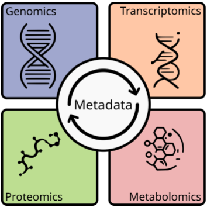
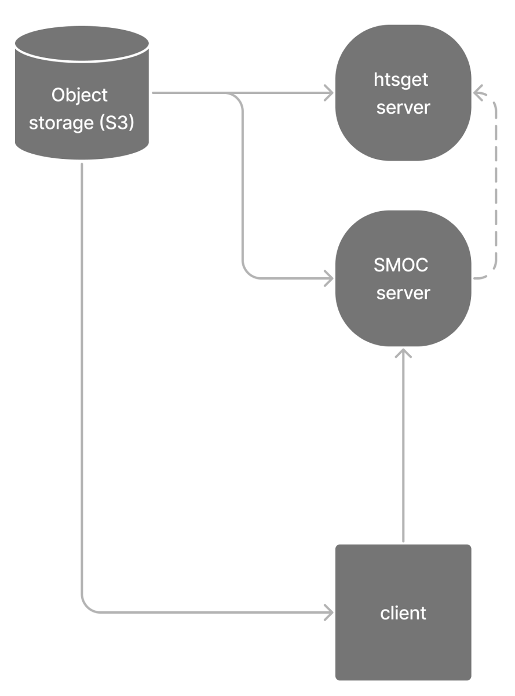

Background#
Multiomics - the (full) picture#
Molecular mechanisms are highly regulated at various levels. Different omic layers (genomics, transcriptomics, proteomics, metabolomics) interact and communicate with each other to establish specific phenotypes. Thus, it can be crucial to explore several of these layers together to understand phenotypic pattern and their nuances, e.g. in the manifestation of genetic diseases. Recent advances in sequencing technologies enabled the parallel measurement of multiple omic layers from the same sample. Integrated analysis of these multiomics data can help to unravel the underlying molecular mechanisms of regulation and their interactions.
Multi Omics Digital Object System(MODOS)#
Features#
{kind=link}
The main goal of MODOS is to enable collaborative analysis and data sharing of multiomics data. Typically multiomics data are large in size, diverse in their formats and object to secure access. Thus remote storage with regulated access can be key to enable data sharing and integrated analysis.
Because of these requirements the MODOS-api provides the following key features:
queryable, linked metadata
data and metadata synchronisation
compression
remote access
streaming
Object structure#
Internally, MODOS builds on the zarr file storage format, that allows storage and access of chunked, compressed, N-dimensional arrays alongside their metadata in hierachical groups. All metadata can be consolidated and exported separately for querying or listing purposes. Genomics data are not stored as arrays, but can be added to the zarr archive in CRAM format. CRAM is a reference-based compression format for alignment files:
{kind=link}
Remote storage#
{kind=link}
The MODOS-api provides a server implementation to facilitate remote storage and access. This server consists of 3 main components:
a webserver exposing a REST api to interact with remote objects
a htsget server to provide streaming access over network to CRAM files
s3 bucket to allow remote random access
Detailed instructions about how to deploy can be found in the MODOS-api github project -> deploy.